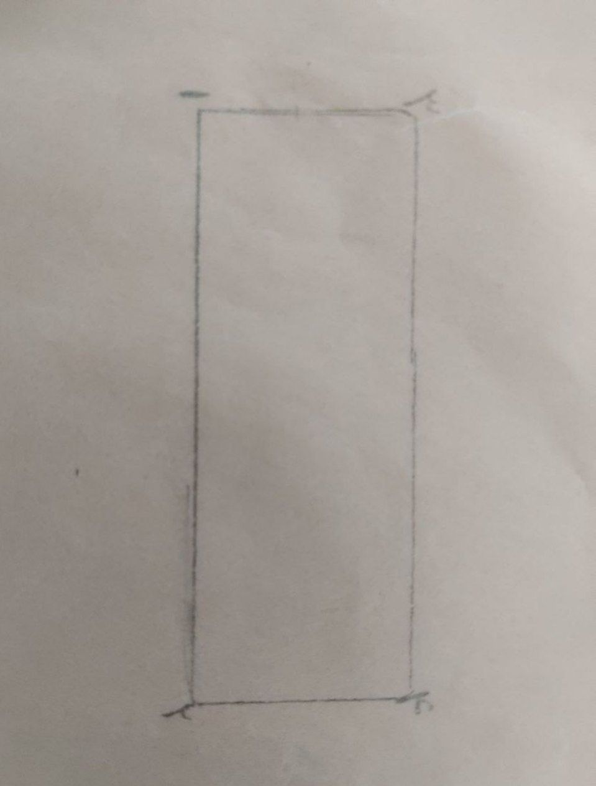
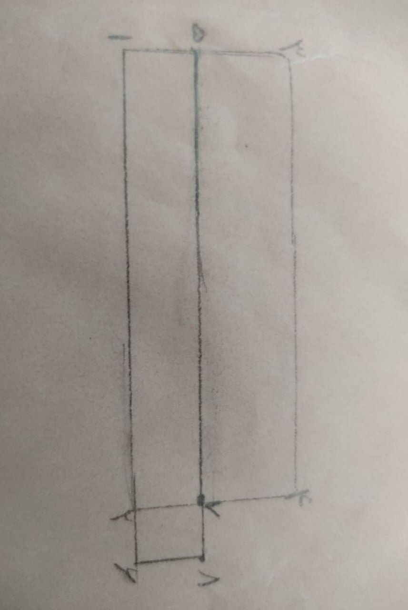
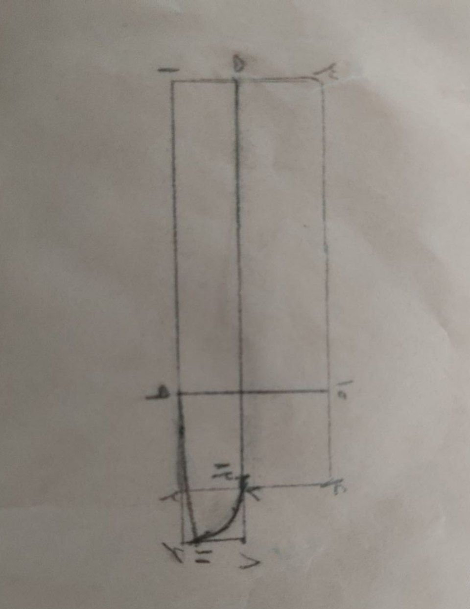
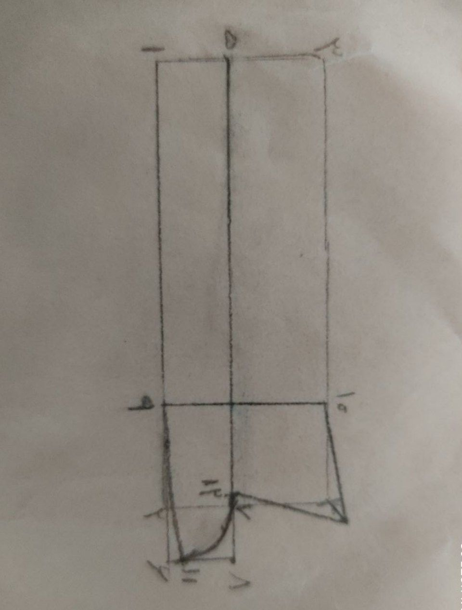

الگو یقه مردانه
ابتدا کادر به طول دور گردن گشاد شده و عرض 9سانت رسم میکنیم و نقاط 1,2,3,4به دست می آید
1-5 از نقطه 1 چهار سانت بالا رفته و نقطه 5به دست می آید 2-6 به اندازه عرض جادکمه به کادر اضافه میکنیم 5-7 نقطه 5 را امتداد می دهیم نقطه ای که به خط 2-4 برخورد کرد را نقطه 7می نامیم 5-8 نقطه 5را امتداد میدهیم و از نقطه 6خطی گونیا میکنیم نقطه برخورد این دو خط را 8می نامیم.
9 برابر است با یک چهارم خط1تا2 نقطه 9را گونیا میکنیم و نقطه 10به دست می آید از نقطه 6 به اندازه 0/75سانت بالا میرویم و نقطه 11به دست می آید آن را با خطی منحنی به نقطه 9وصل میکنیم از نقطه 7 به اندازه0/75سانت بالا میرویم و نقطه 12به دست می آید امن را با خطی منحنی (مانند شکل )به نقطه 11وصل میکنیم.
از نقطه 4 به اندازه 1/5الی2بیرون میرویم و به نقطه 10 وصل میکنیم نکته(الگو باید روی چهار لایه بسته برش بخورد).
